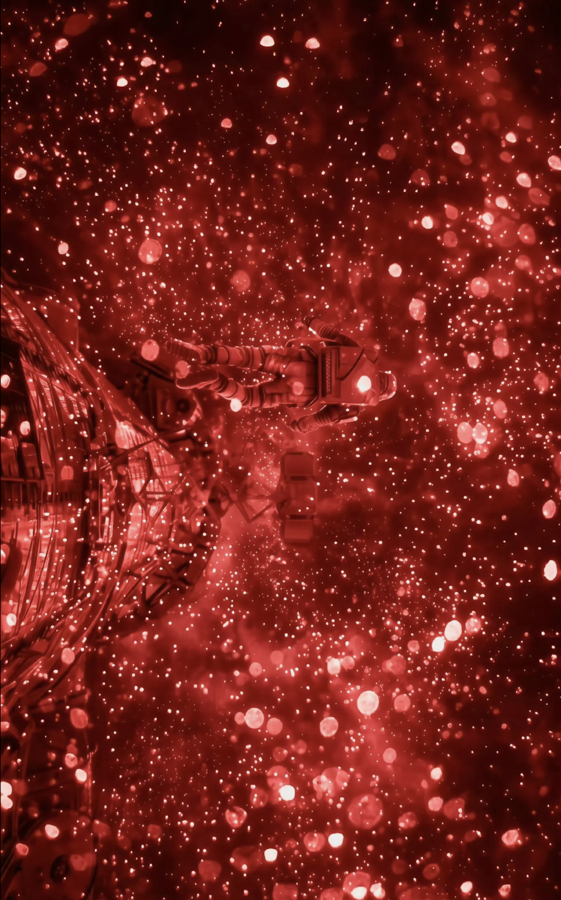
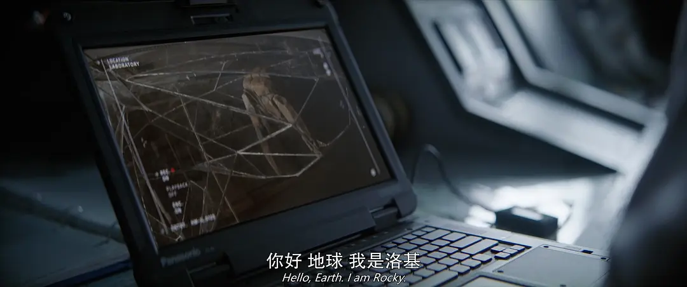
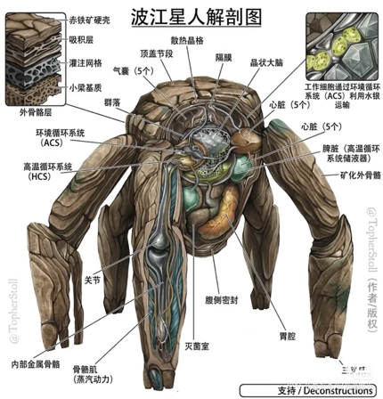
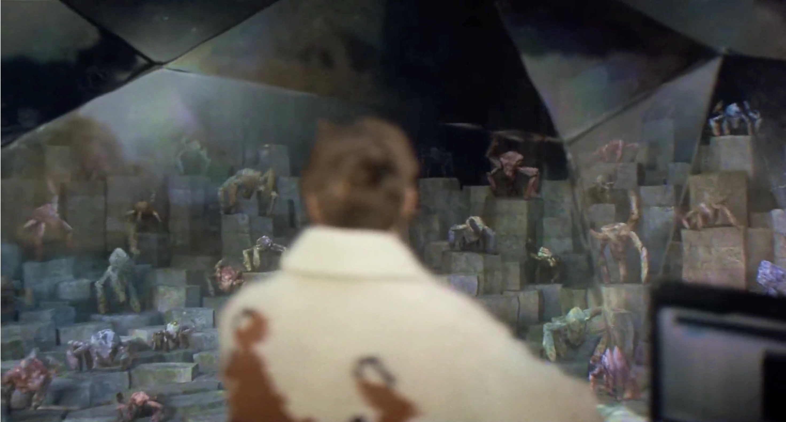

电影中的科学之——《挽救计划》中的外星生命想象与科学认识
内容简介
在那里，他遭遇了同样来寻找拯救母星方案的波江座工程师洛基。尽管两者语言不通、感官与环境隔绝，但他们凭借宇宙共通的物理和数学规律搭建起了沟通桥梁，携手合作，运用科学方法在行星大气中找到了噬星体的天敌——微型原虫。
然而，原虫变异导致洛基飞船陷入绝境。影片结尾，格雷斯将装载着拯救地球方案的探测器发射回母星，自己则毅然放弃返乡，去营救外星挚友。影片借由这场跨越星际的相遇，不仅打破了人类对生命形态的固有想象，更展现了科学跨越文明鸿沟的普遍力量，完成了一次对科学本质的深刻探讨。
问题一：外星生命，必须像地球生命吗？
天体生物学家在搜寻地外生命时，习惯于把液态水、适居带作为主要线索[1][2]。这种以地球为模板的策略固然有其依据，但也容易让人陷入思维定势——我们是否把“寻找生命”简化成“寻找另一个地球”？事实上，极端微生物的发现已一再突破人类对生命边界的认知[3]。格雷斯正是这种怀疑的践行者：他主张生命演化未必需要液态水，并因此与学界发生冲突。

天噬体的出现，似乎印证了格雷斯的猜想：它不在任何传统适居带内活动，而是贴着恒星表面，靠吞噬能量为生，以近乎微生物生命周期的方式繁殖和迁移[4]。单论生存环境，它几乎推翻了所有类地标准。然而，影片没有把它塑造成一种完全脱离现有科学认知的外星物质。格雷斯深入研究后发现，天噬体内部依然含有水，依然运转着遗传信息和能量代谢机制[5]。它的生存方式极端得不像生命，可它的分子逻辑却又处处勾连着生物学的认知边界。这一反转设定让影片不流于那些反主流科幻爽片，也抛出追问：如果一种生命既保留我们熟悉的生化基础，也出现在完全陌生的宇宙环境中，我们原有的生命搜索标准又要如何改写？


建构空间感；他的语言由多重和弦构成。然而，就是这样一个连星空都看不见的异质生物，却精通材料学与工程学，也能与格雷斯联手解决天噬体难题。这不禁让我反思：我们对生命与智慧的判断，究竟有多少是宇宙的客观规律，又有多少仅是地球经验的无意识投射？更意味深长的在于，这种对生命定义的挑战，在影片后段又与生命本身的起源纠缠在一起。格雷斯在与洛基的交流中震惊地发现，这两个相距 16 光年、外在形态天差地别的文明，在微观层面上竟然使用着完全相同的蛋白质、化学物质和糖类。基于此，格雷斯推断出：天噬体的某种远古祖先曾在数十亿年前同时向地球与波江座播撒了生命种子。这一设定借用了现实天体物理学中曾引发广泛讨论的泛种论假说[6]——生命也许并非在每个星球上孤立起源，而是通过天体撞击等过程在星际空间中传播[7]。影片由此完成了一个颇具哲学意味的反转：那个正在吸干恒星、被人类视作末日灾厄的天噬体，其先祖恰恰是两个文明共同的生命起点。
问题二：一个文明的科学发展，会怎样受到自身环境影响？
影片中洛基所在的波江座文明最反直觉的设定莫过于“科技偏科”：他们精通材料学与工程学，能建造太空电梯和星际飞船，甚至制造出人类无法解析的异星材料；但在基础物理领域，他们却对宇宙辐射一无所知，计算星际航行时也完全没有相对论与时间膨胀的概念[8]。一个能远航星海的文明，为何会缺乏这些对太空旅行至关重要的知识？这不仅是导致洛基的22名船员死于急性辐射病的悲剧根源，更是一个深刻的科学哲学命题。
人类对光、星空与高速运动的认识，并非从天而降，而根植于数千年仰望星空的历史，经由望远镜、光谱仪和精密测量技术逐步积累，才催生出天体物理学、相对论等理论[9]；人类对辐射的重视，也是在矿物放射性研究、核技术和航天实践中被一次次推到台前的[10]。波江座文明恰好描绘出另一条可能的路径：他们的星球环境较少暴露于宇宙辐射，也不具备视觉感官，因此其科学从未被那些驱动人类科学进步的特定现象推动。这个设定像一面镜子，映照出人类科学探索路径的偶然性：宇宙的物理规律客观恒定，但不同文明撞见这些规律的契机可以截然不同。换一种身体、换一种大气、换一种行星环境，科学的起点和顺序就可能全然改写。
然而，影片的讨论没有止步于此。如果科学被环境如此深刻地塑造，不同文明之间是否还有沟通的可能？
格雷斯与洛基用最笨拙、也最科学的方式回答了这个问题。他们没有依赖玄虚的心灵感应，而是退回到了宇宙最底层的物理经验中去校准彼此的世界：洛基在透明隔板前展示了波江座的六进制时钟，格雷斯则用自制的单摆和秒表，测算出波江座的一秒精确等于地球的2.366秒；洛基递出一个圆球，格雷斯通过水的密度推算出它的质量，双方借此确立了元素周期表第26号元素——铁的共同概念。这一缓慢笨拙的过程，在我看来却极具科学的原初意味：他们用来搭建信任桥梁的，不是彼此的历史、文化或道德观，而是单摆的振动周期与铁原子的质量。这正是科学最动人的双重属性——它的发现过程受制于观察者的环境，但它的经验验证却是一种任何观察者都无法否认的宇宙公约数。
个人思考
纵观多数科幻电影叙事，外星文明往往被处理成套着奇异外壳的人类社会：语言天然无障碍，价值观轻易能对接，终极冲突也逃不出既有的政治与战争逻辑。而《挽救计划》的非凡之处，在于它非但没有绕开这个文明互斥难题，反而将其确立为整部影片的核心驱动力——如果两种智慧生命在生理感官、自然环境和科学史上截然相异，他们是否还有可能找到沟通的桥梁？这一问题之下，潜藏着对科学本质的更深追问：科学，究竟是超越时空的普遍真理，还是每一位观察者在其处境中建构出的产物？
影片中的两条科学线索最终汇聚，对这个难题给出回答。天噬体让人看见，外星生命未必诞生于人类熟悉的环境，地球的经验法则不可迷信也不能被简单地抛弃；洛基的文明让人看见，科学的演进路径会被环境深刻塑形，但不同文明依然能通过实验与测量找到共通的基础。主角格雷斯最了不起的地方，不在于他头脑中有多少知识，而在于他面对全然陌生的天噬体与异星生命时，没有套用现成框架，而是退回原初的观察与试错，重新提问，一点一点压缩未知的疆界。
在影片的尾声，导演用一个极具反差感与温情色彩的定格画面，为这种科学的普遍性赋予了充满诗意的影像表达。镜头切到波江座的一间教室里，留在这里的格雷斯，正对着满屋子的波江座幼童讲课。“有谁能告诉我光速是多少？”话音刚落，许多孩子高高举起了他们的爪子。这一幕令人动容。两个物种的躯体形态、感知方式、语言和历史处境犹如天堑，但他们仍然可以从同一个物理常数开始，去认知同一个宇宙。

到这里，《挽救计划》真正完成了它的主题升华：科学不会因为知识来源和观察者的处境不同而沦为各说各话的伪命题。科学的环境依赖与它的跨文明普遍性非但不矛盾，反而是同一枚硬币的两面——知识确实是在特定的环境与历史处境中被提出和建构的，但它的有效性基础，是那些任何观察者都无法通过否认观察来消除的经验事实。正是这种建立在可重复验证之上的宇宙公约数，让格雷斯和洛基的星际合作超越了一场单纯的末日拯救行动，成为了两个远隔星海、本无交集的孤独文明，得以真正理解彼此的伟大开端。
参考文献：
[1]NASA Astrobiology Program. NASA Astrobiology Strategy 2015. Washington, DC: NASA, 2015.
[2]National Research Council. The Limits of Organic Life in Planetary Systems. Washington, DC: The National Academies Press, 2007.
[3]Merino, N., Aronson, H. S., Bojanova, D. P., Feyhl-Buska, J., Wong, M. L., Zhang, S., and Giovannelli, D. “Living at the Extremes: Extremophiles and the Limits of Life in a Planetary Context.” Frontiers in Microbiology 10 (2019): 780.
[4]NASA. “The Science Behind Project Hail Mary.” NASA Science, 2026.
[5]Smethurst, Becky. “Astrophysicist Breaks Down Project Hail Mary (ft. Ryan Gosling).” YouTube video, 2026.
[6]Belbruno, E., Moro-Martín, A., Malhotra, R., and Savransky, D. “Chaotic Exchange of Solid Material Between Planetary Systems: Implications for Lithopanspermia.” Astrobiology 12, no. 8 (2012): 754–774.
[7]Princeton University. “Slow-Moving Rocks Better Odds That Life Crashed to Earth from Space.” 2012.
[8]Taylor, E. F., and Wheeler, J. A. Spacetime Physics: Introduction to Special Relativity. 2nd ed. New York: W. H. Freeman, 1992.
[9]Hearnshaw, J. B. Astronomical Spectrographs and Their History. Cambridge: Cambridge University Press, 2009.
[10]Badash, L. Radioactivity in America: Growth and Decay of a Science. Baltimore: Johns Hopkins University Press, 1979.